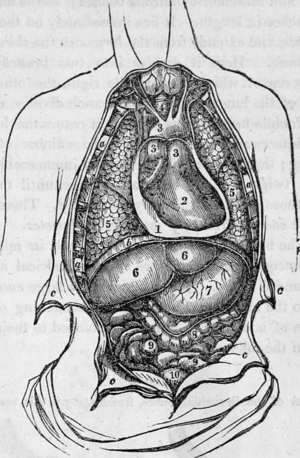
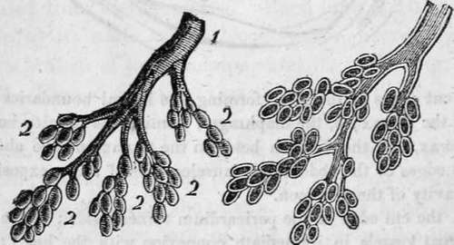
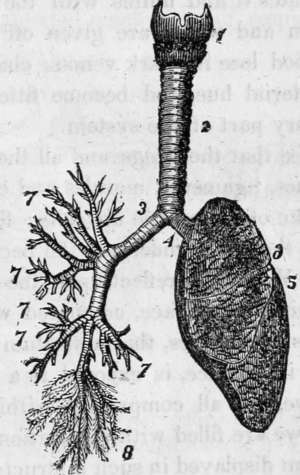

Respiration. Part 2
Description
This section is from the book "Human Physiology For The Use Of Elementary Schools", by Charles Alfred Lee. Also available from Amazon: Human Physiology, for the Use of Elementary Schools.
Respiration. Part 2
9. The third division of our subject embraces the respiratory organs, or the lungs. These are of a spongy texture and conical shape, and fill the cavity of the chest, being composed chiefly of blood vessels, and air vessels, with a small portion of cellular tissue. They are called lights in the lower animals. There are two lungs, one in the right, the other in the left side of the thorax ; and each of these lungs is divided into several lobes. A serous membrane called the pleura surrounds the lungs, and is reflected upon the walls of the chest, so as to form a shut sac, into which a thin watery fluid is constantly exhaled, to keep the surfaces moist and slippery. It is this membrane which is the seat of pleurisy. There are two pleurae, each of which is confined to its own side of the chest, lining its cavity, and covering the lung. Behind the breast bone, they form a partition, called mediastinum; between the sides of which, the heart and pericardium are situated. The pleurae serve to attach the lungs by their roots to their respective cavities, and to facilitate their movements, by means of the fluid exhaled from their surfaces. Each lung is attached to the spine by its roots, where blood vessels, nerves, lymphatics, and a branch of the windpipe enter it. (See Fig. 5.)
10. Thus we perceive that the chest is divided into three compartments, one on each side, containing a lung ; the middle one, the heart. Between these there is no communication ; so that if a fluid is thrown into one of them, it does not find its way into the others. As the heart lies chiefly on the left side, the lung of that side is smaller than the one on the right, and divided into only two lobes, while the other is divided into three. The lungs are the lightest texture in the human body, owing to the air which they contain, and their aspect varies with the age. In infancy they are of a pale red, in youth of a darker colour, and in old age of a livid blue.
a, the cut edges of the ribs, forming the lateral boundaries of the cavity of the thorax; b, the diaphragm, forming the inferior boundary of the thorax, and the division between the thorax and the abdomen ; c, the cut edges of the abdominal muscles, turned aside, exposing the general cavity of the abdomen.
Fig. 1, the cut edge of the pericardium turned aside ; 2, the heart; 3, the great vessels in immediate connexion with the heart; 4, the trachea, or wind pipe ; 5, the lungs; 6, the liver; 7, the stomach; 8, the large intestine ; 9, the small intestines ; 10, the urinary bladder.
11. The air enters the lungs through the trachea or windpipe. This is a tube, made up of little rings, cartilaginous in front, and muscular or fibrous behind; and is about eight or ten inches in length. It lies immediately on the gullet or aesophagus, and extends from the larynx to the third vertebra of the back. Here it divides into two branches, called bronchia, one of which goes to the right, the other to the left lobe of the lungs. The right branch divides again into three principle branches, as soon as it enters the lung ; and the left into two; corresponding to the number of lobes in each lung; then they subdivide into an innumerable number of small twigs, like the branch of a tree, until they terminate in those small cells already mentioned. These cells are about the one hundredth of an inch in diameter.
12. The bronchial tubes then, terminate in minute vesicles of unequal size, which are of a cylindrical and somewhat rounded figure. These vesicles are large enough to be visible to the naked eye, and present something of the appearance of a cluster of currants attached to their stem, as shown in the following cut:
View of the Bronchial Tubes, terminating in Air vesicles.
External view.-1. Bronchial tube. | The Bronchial tube and Air 2. Air vesicles. | vesicles laid open.
It should be borne in mind that the office of respiration is to bring the blood in contact with the air, and, accordingly, the lungs are so constructed as to allow the largest possible quantity of deteriorated blood, to enjoy the fullest intercourse with the largest possible quantity of vital air; and all the mechanism of bones and muscles which I have described, are only subservient to th s end. Now it has been calculated by Hales, that each air cell is the one hundredth part of an inch in diameter, and that the amount of surface furnished by them, collectively, is equal to twenty thousand square inches. Other physiologists have calculated the surface to be over fifteen hundred cubic feet, and Munroe states that it is thirty times the surface of the human body.
1. The larynx; 2. The trachea; 3. Right bronchia; 4. Left bronchia; 5. Left lung divided into three lobes; 7. Large bronchial tubes; 8. Small bronchial tubes ending in air cells or vesicles.
13. Such is the structure of the vessel which conveys the air to the blood; let us examine how the blood gets to the air. This is effected by means of the pulmonary artery, which springs from the right ventricle of the heart, divides into two branches, one for each lung, and again subdivides, and ramifies through the organ in a manner precisely similar to the bronchial tubes. Every bronchus, or branch of the trachea, thus has a corresponding blood vessel, which tracks it throughout its entire course until it reaches the air vesicles, upon the surface of which the minute vessels expand and ramify, forming a net work so beautiful, that the anatomist who first observed it, called it the rete mirabile, or the wonderful net work. Thus the air is on one side, and the blood on the other, of an immense surface of membrane, finer than the most delicate lace or gauze ; and as such membranes are permeable to air and other gases, the oxygen of the air penetrates it and unites with the blood, while a portion of carbon and water are given off by exhalation. Thus does the blood lose its dark venous character, and assume a florid, arterial hue, and become fitted to carry life and vigour to every part of the system.
Continue to:
Tags
humans, anatomy, skeleton, bones, physiology, organs, nerves, brain